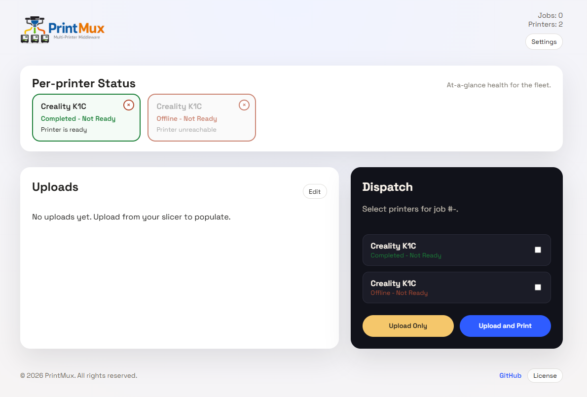
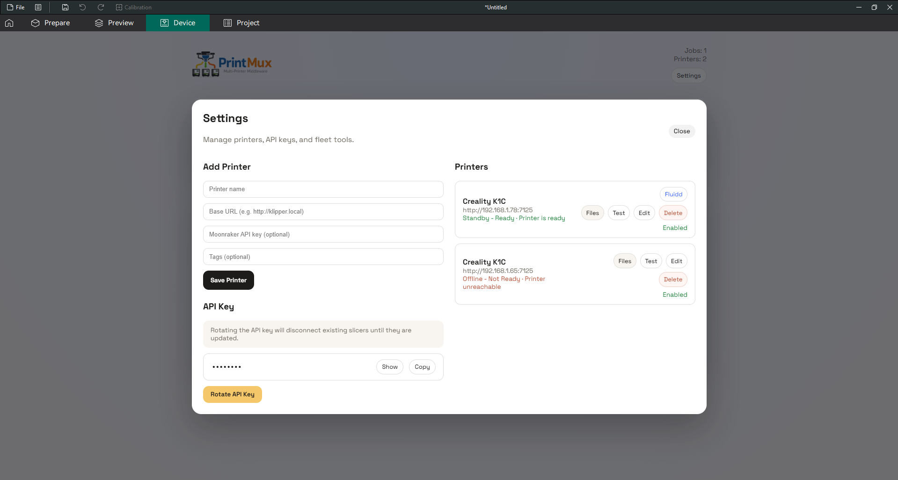
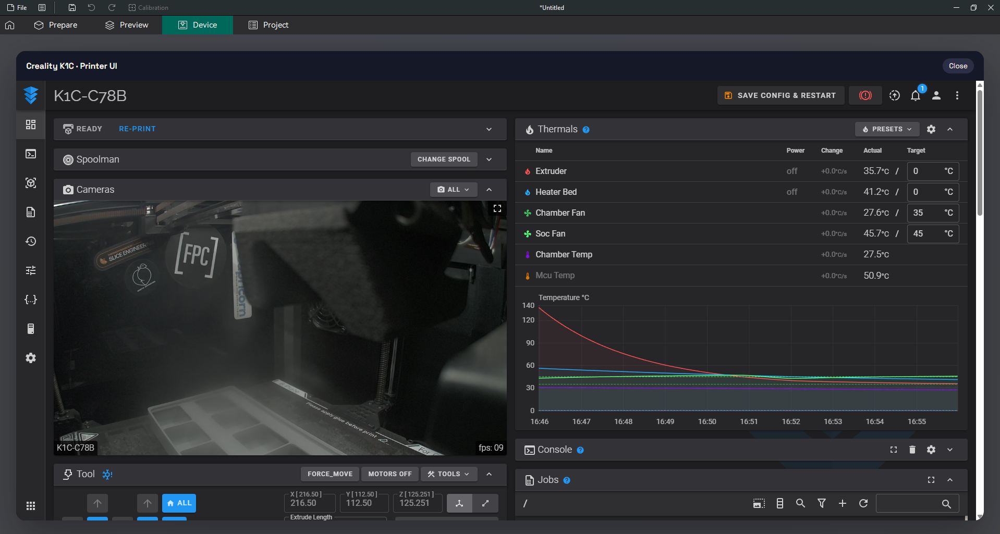

Multi‑Printer Middleware
Upload once. Dispatch everywhere.
PrintMux sits between slicers and your printer fleet, presenting Moonraker‑compatible and minimal OctoPrint‑compatible endpoints alongside a modern dispatch UI. One upload, many printers.

Live dispatch, uploads, and printer state at a glance - in the browser or in OrcaSlicer.
Why PrintMux
One Slicer Printer
Present a single Moonraker endpoint to slicers and decide dispatch later.
Fleet Awareness
Monitor printer health, availability, and print state in one place.
Fast Dispatch
Send jobs to multiple printers with upload‑only or upload‑and‑print workflows.
Self‑Hosted
Lightweight, auditable, and easy to run on your own hardware.
Built for Makers and Farms


Ready to get started?
Follow the quick start guide and connect your first printer in minutes.